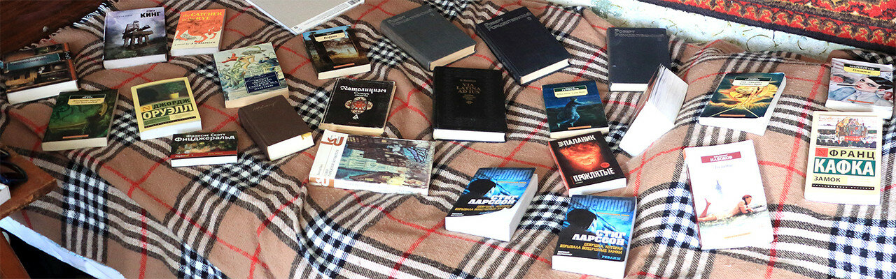

Пока я ловил рыбку большую и малую, внучка Соня глотала книги, которые всюду возила в своем рюкзаке. Читала она на ходу в машине, читала на берегу реки, читала в постели глубоко за полночь. В конце нашей месячной поездки в Борисоглебск я решил проинспектировать содержание этого рюкзака. И попал в тупик: ругать или поощрять свою тринадцатилетнюю внучку. Вот эти книги, часть которых она привезла из Москвы, часть мы купили в местном книжном магазине.

Ну Кафку или Ницше читать точно рано, но ведь и другие книги не для чтения во время летних каникул. Куда катится современная молодежь!